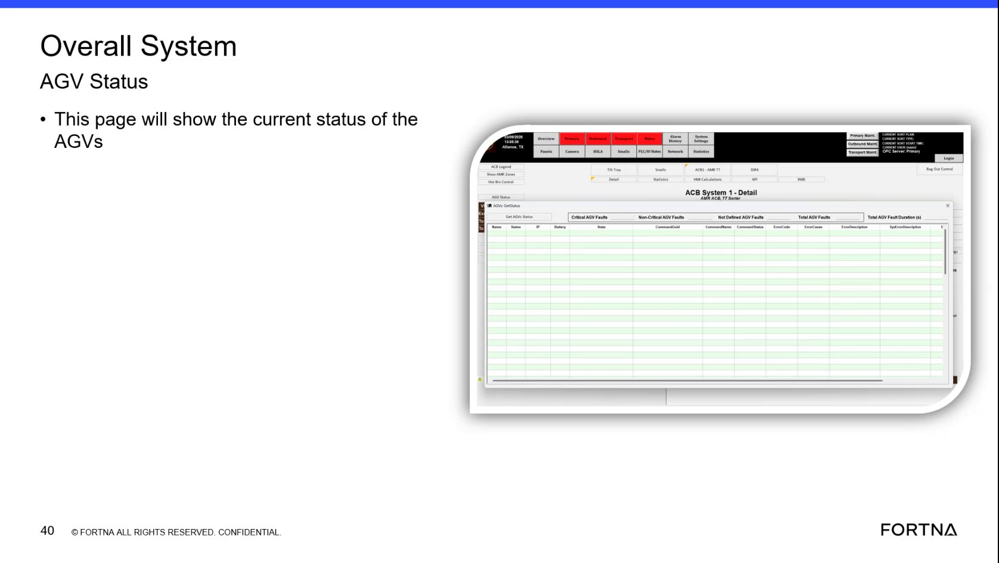

| Procedure ID | proc_check_current_agv_system_status_using_the_rms_page_v1 |
|---|---|
| Title | Check Current AGV System Status Using the RMS Page |
| Procedure Type | diagnostic |
| Primary Role | L1_support |
| Support Safe | Yes |
| Validation Status | needs_sme_review |
| Merge Status | source_finalized |
Use the RMS page to remotely access the "Overall System AGV Status" view and review the current system status information shown there. This source supports only locating and viewing the status page, not interpreting specific indicators or taking corrective action.
Use when remote support needs to view the current AGV or system status through the RMS page and confirm that the "Overall System AGV Status" page is available.
Responsible role: L1_support
Instruction:
Open or navigate to the RMS page referenced in the training segment for remote availability.
Expected result:
The RMS page is accessible remotely.
Screens / Images:

Stop or Escalate If:
Responsible role: L1_support
Instruction:
Locate the page titled "Overall System AGV Status" within the available RMS-related interface.
Expected result:
The page titled "Overall System AGV Status" is visible.
Screens / Images:
Stop or Escalate If:
Responsible role: L1_support
Instruction:
Verify that the displayed page is the one described as showing the current status of the system.
Expected result:
The page is confirmed as the current system status view.
Screens / Images:
Stop or Escalate If:
Responsible role: L1_support
Instruction:
Review the current status information shown on the Overall System AGV Status page using only the values and indicators presented on that page.
Expected result:
The current AGV or system status is visible for remote review.
Screens / Images:
Stop or Escalate If: